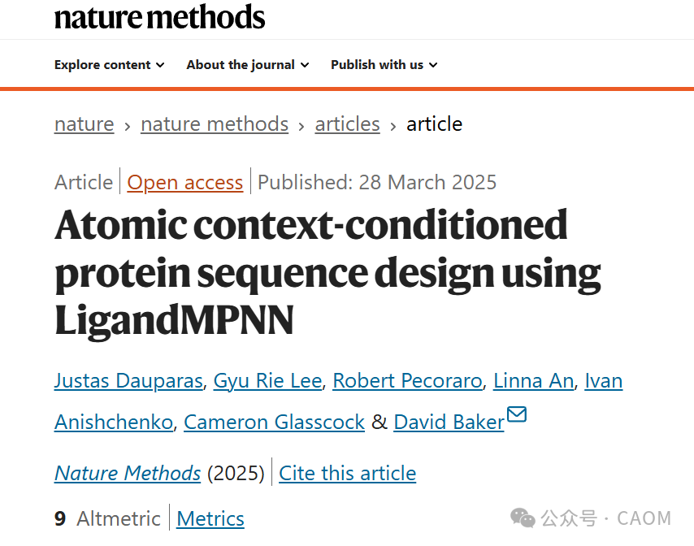
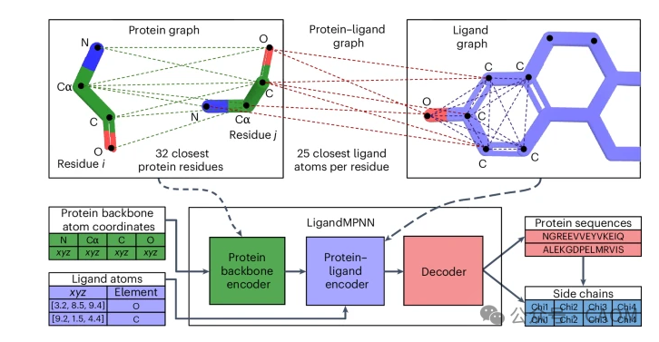

以下是其核心用途和特点：
结合位点序列设计：
为蛋白质中与配体（药物分子、辅因子、金属等）相互作用的区域设计最优的氨基酸序列，确保结合亲和力和特异性。
功能位点优化：
在保留蛋白质整体结构的前提下，定向改造结合口袋的化学环境（如氢键、疏水相互作用等），以增强配体结合或催化活性。

LigandMPNN 的核心是一个图神经网络（GNN），专门处理蛋白质-配体复合物的3D结构信息。其架构主要包括以下组件：
蛋白质图：
节点：每个氨基酸残基（Cα原子）和配体原子。
边：基于空间距离（通常为10Å阈值）或共价连接。
节点特征：氨基酸类型、二级结构、溶剂可及性等。
边特征：距离、方向、化学键类型（如氢键、疏水接触）。
配体特征：
原子类型（如C、N、O）、电荷、环结构、官能团（通过RDKit等工具提取）。
多层图卷积：通过迭代更新节点和边的信息，捕获蛋白质-配体相互作用。
注意力机制：对关键相互作用（如氢键）赋予更高权重。
自回归生成：逐个残基预测氨基酸类型，基于上下文和配体信息。
配体化学指纹：将配体原子类型、环状结构等编码为特征向量。
动态边构建：不仅依赖距离，还考虑配体-蛋白质的化学互补性（如氢键供体/受体匹配）。
支持对称蛋白质复合物（如二聚体、六聚体）的设计：
通过对称等价的边信息共享，确保对称位点序列一致性。
通过调整采样温度（Temperature）：
低温（T=0.1）：生成保守、高概率序列。
高温（T=1.0）：探索多样性，用于创新设计。
结构准备：通过实验或AlphaFold获得蛋白-配体复合物结构
序列设计：用LigandMPNN优化结合位点
验证：使用分子对接或实验测定结合亲和力
迭代优化：结合实验反馈改进设计